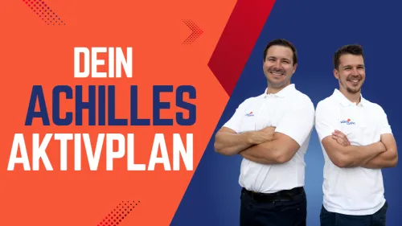

Der Achillessehnen-Aktivplan vom Physiotherapeuten
Produktprofil · Marktplatz-Daten 2026-10-13 · Verkaufsseiten-Recherche 2026-10-13 · Kategorien: Health & Fitness, Sport
- Der Achillessehnen-Aktivplan vom Physiotherapeuten ist ein/e Mitgliederbereich & Videokurs in Health & Fitness und Sport, vertrieben über den Digistore24-Marktplatz von Anbieter video-reha, gelistet seit 2026-07-15.
- Listenpreis $93.01; Digistore24 meldet — Checkout-Konversion, — Stornierungsquote und 25 % Affiliate-Provision.
- Verdienst pro Verkauf (Affiliate): $23.26 (Anbieter-seitige Statistik, keine Prognose).
Interesse an Der Achillessehnen-Aktivplan vom Physiotherapeuten? Aktueller Preis, Boni und Garantiebedingungen finden Sie auf der offiziellen Seite des Anbieters:
Offizielle Verkaufsseite ansehen
Affiliate-Link (Werbung) — wir verdienen ggf. eine Provision, ohne Mehrkosten für Sie.

Marktplatz-Daten
| Produkttyp | Mitgliederbereich & Videokurs |
|---|---|
| Preis | $93.01 (Single payment) |
| Affiliate-Provision | 25 % |
| Garantie/Rückgabe | Laut Verkaufsseite des Anbieters — vor dem Kauf auf der offiziellen Seite prüfen |
| Anbieter | video-reha (gelistet seit 2026-07-15) |
| Marktplatz-Statistiken* | Checkout-Konversion — · Stornoquote — · Verdienst/Verkauf $23.26 |
* Anbieter-seitige Statistiken von Digistore24; sie hängen von der Traffic-Qualität ab und sind keine Prognose.
Marktplatz-Beschreibung des Anbieters
Affiliate-Programm: Achillessehnen-Aktivplan von Video-Reha Empfiehl deiner Community einen wissenschaftsbasierten Onlinekurs statt leerer Heilversprechen. Entwickelt von zwei erfahrenen Physiotherapeuten der Video-Reha für aktive Menschen (Läufer, Wanderer, Fußaller, Sportler) mit Achillessehnenbeschwerden. Produkt: 15 Module, 32 Lektionen, 56 Studien verarbeitet. Bonusmaterial: Trainingstagebuch, Trainingspläne, Fragebögen zum Selbsttest. Vorteile: Seriöses Produkt von Physiotherapeuten entwickelt, ehrliches Marketing, wachsende Plattform. Zielgruppe: Jogger, Läufer, Wanderer, Menschen mit Schmerzen an der Achillessehne. Konditionen: 99 € Einmalzahlung (kein Abo), 25 % Provision via Digistore24. Besonders geeignet für Partner mit: Reichweite zum Thema Laufen, Joggen, Marathon, Wandern, Radfahren u.ä. Werde Partner, wenn du für ehrliche, verständliche Orientierung stehst! Produktinformationen Preis: 99 € Affiliate-Provision: 25 % Zahlungsmodell: Einmalzahlung Upsells: Keine Cookie-Laufzeit: Digistore24-Standard Richtlinien für Affiliate-Partner Wir stehen für höchste Qualität, minimale Stornos und 5-Sterne-Bewertungen. Das erwarten wir auch von unseren Partnern. Für eine faire und erfolgreiche Zusammenarbeit gelten folgende Regeln: Werbemittel: Kopiere oder verwende keine fremden Bilder/Texte oder andere Materialien, wenn du nicht die Nutzungsrechte dazu hast. No Spam: Aggressives E-Mail-Marketing und Spam sind strikt verboten. Identität: Werbe niemals im Namen von Anita oder unter falscher Identität. Ehrlichkeit: Keine falschen Versprechungen, Heilversprechen oder Fehlinformationen. Überzeugung: Empfiehl den Kurs nur, wenn du selbst dahinterstehst. Vorbereitung: Informiere dich vorab gründlich auf unserer Verkaufsseite. Bei Fragen melde dich bei uns. Ausführliche Informationen zum Achillessehnen-Aktivplan der Video-Reha Wenn du deiner Community ein Produkt empfehlen möchtest, hinter dem du mit gutem Gewissen stehen kannst, freuen wir uns, dass du hier bist. Wenn du nach einem Gesundheitsprodukt suchst, das mit spektakulären Heilversprechen oder der „einen geheimen Übung“ wirbt, wirst du bei uns vermutlich nicht fündig. Der Achillessehnen-Aktivplan ist ein Kurs von video-reha.de – einer Plattform, auf der wir Schritt für Schritt digitale Programme für Beschwerden des Bewegungsapparates entwickeln. Unser Ziel ist nicht, möglichst viele Kurse zu veröffentlichen. Unser Ziel ist es, Menschen dabei zu unterstützen, ihre Beschwerden besser zu verstehen und ihre Gesundheit selbst aktiv in die Hand zu nehmen. Der Achillessehnen-Aktivplan Der Kurs richtet sich an aktive Menschen mit Achillessehnenbeschwerden – insbesondere an Läufer, Wanderer, Fitnesssportler und Menschen, die wieder schmerzärmer und sicherer in ihren Alltag und Sport zurückfinden möchten. Der Kurs beinhaltet: 15 strukturierte Module 32 Videolektionen über 80 Übungsvideos mehr als 4 Stunden Videomaterial Ein zentraler Bestandteil unseres Konzepts ist das Phasenmodell. Statt allen Teilnehmern dieselben Übungen zu empfehlen, helfen wir ihnen dabei, ihre aktuelle Situation einzuordnen und das Programm an ihren individuellen Verlauf anzupassen. Denn nicht jede Achillessehne benötigt zum gleichen Zeitpunkt dieselbe Belastung. Warum sich eine Zusammenarbeit mit Video-Reha lohnt Mit dem Achillessehnen-Aktivplan beginnt der Aufbau von Video-Reha. In den kommenden Jahren entwickeln wir weitere digitale Programme für häufige Beschwerden des Bewegungsapparates – immer nach derselben Arbeitsweise und denselben Qualitätsansprüchen. Wir möchten langfristige Partnerschaften mit Affiliates aufbauen, die ihrer Community hochwertige Gesundheitsprodukte empfehlen möchten. Entwickelt von zwei erfahrenen Physiotherapeuten Klare Zielgruppe Seriöse Positionierung Digitale Sofortauslieferung Kein Abo Langfristig wachsende Kursplattform Warum es die Video-Reha gibt Wir arbeiten beide seit vielen Jahren als Physiotherapeuten. In unserer täglichen Arbeit erleben wir immer wieder dieselbe Situation: Viele Menschen warten wochenlang auf einen Termin beim Arzt oder Physiotherapeuten. In dieser Zeit suchen sie im Internet nach Antworten – und finden häufig widersprüchliche Informationen, veraltete Empfehlungen oder unrealistische Versprechen. Genau deshalb haben wir Video-Reha gegründet. Wir möchten Menschen verständliche Orientierung geben. Nicht, damit sie von uns abhängig werden. Sondern damit sie ihre Gesundheit selbstbestimmt in die Hand nehmen können. Die Philosophie der Video-Reha Wir glauben, dass gute Therapie Menschen unabhängiger machen sollte – nicht abhängiger. Deshalb möchten wir Menschen nicht einfach sagen, was sie unternehmen sollen. Wir möchten ihnen helfen zu verstehen, warum bestimmte Maßnahmen sinnvoll sind und wie sie ihre Beschwerden Schritt für Schritt selbst aktiv angehen können. Denn wir sind überzeugt: Der wichtigste Experte für den eigenen Körper ist immer der Mensch selbst. Unsere Aufgabe als Physiotherapeuten besteht darin, medizinisches Wissen verständlich zu vermitteln und Menschen dabei zu unterstützen, gute Entscheidungen für ihre eigene Gesundheit zu treffen. So entstehen unsere Kurse Jeder Kurs beginnt lange bevor die erste Kamera eingeschaltet wird. Beim Achillessehnen-Aktivplan haben wir zunächst: 56 wissenschaftliche Studien ausgewertet aktuelle Leitlinien recherchiert daraus ein rund 70 Seiten umfassendes internes Fachkonzept entwickelt Erst anschließend entstand der eigentliche Onlinekurs. Unser Ziel war dabei nie, möglichst viele Übungen zusammenzustellen. Unser Ziel war es, ein verständliches Konzept zu entwickeln, das Menschen Orientierung gibt und sie dabei unterstützt, ihre Belastung sinnvoll zu steuern und Schritt für Schritt wieder zu einem aktiven Alltag und Sport zurückzufinden. Unsere praktische Erfahrung und der aktuelle wissenschaftliche Kenntnisstand gehören für uns zusammen. Eine persönliche Bitte zum Schluss Wir freuen uns besonders über Affiliate-Partner, die unsere Werte teilen. Bitte bewirb unseren Kurs so, wie wir ihn entwickelt haben: ehrlich, verständlich und ohne unrealistische Heilversprechen. Wir glauben, dass Menschen keine übertriebenen Versprechen benötigen. Sie benötigen Orientierung, nachvollziehbare Informationen und Empfehlungen, denen sie vertrauen können. Wenn deine Community dir vertraut und du nur Produkte empfiehlst, hinter denen du selbst stehen kannst, freuen wir uns sehr auf die Zusammenarbeit. Dominik Klaes & Benjamin Schauer Video-Reha.de
Von der Verkaufsseite des Anbieters
Seitentitel: Der Achilles-Aktivkurs von video-reha.de - Digistore24
Abschnitts-Überschriften
- Der Achilles-Aktivkurs von video-reha.de
- Der Achilles-Aktivkurs von video-reha.de
- Der Achilles-Aktivkurs von video-reha.de
Einstiegstext
Achillessehne Aktivplan – das Übungsprogramm für Läufer, Wanderer, Bergsteiger, Fußballer und alle Menschen mit Einschränkungen an der Achillessehne
Du kennst das: Jeder Schritt fühlt sich unangenehm an, Laufen oder Wandern bereitet Probleme – und du möchtest endlich wieder unbeschwert unterwegs sein. Der Achillessehne-Aktivplan ist dein strukturierter Wegbegleiter bei Einschränkungen der Achillessehne. Entwickelt von den Physiotherapeuten Dominik Klaes und Benjamin Schauer (video-reha.de) kombiniert der Kurs wissenschaftliche Erkenntnisse mit praxiserprobten Methoden. Die Knowledge-Base – Grundwissen für deinen Erfolg
Bevor es mit den Übungen losgeht, vermitteln wir dir das notwendige Grundlagenwissen , um den Aufbau und die Funktion deiner Achillessehne zu verstehen:
Kapitel 1: Anatomie der Achillessehne Lerne den Aufbau der Achillessehne kennen – von der Verbindung zwischen Wadenmuskulatur und Fersenbein bis hin zu den umliegenden Strukturen.
Fragen, die die Verkaufsseite beantwortet
- Für wen ist der Kurs?
Preisangaben auf der Seite: $10
Recherche-Methode: rohes HTML · 1848 Wörter · Qualität: rich · recherchiert am 2026-10-13. Vollständige Recherche-Datei (MD) ↗
Wie Produkte dieser Art geliefert werden
Allgemeiner Hinweis zu diesem Produkttyp (keine anbieterspezifische Anleitung): Videokurse laufen über einen Mitgliederbereich: nach dem Checkout erhalten Sie Zugangsdaten per E-Mail und können die Lektionen in Ihrem eigenen Tempo streamen. Für die genaue Anwendung von Der Achillessehnen-Aktivplan vom Physiotherapeuten sind die offizielle Verkaufsseite und die enthaltenen Materialien maßgeblich.
Gut zu wissen
- Keine Garantie-Formulierung in unserer Recherche gefunden — bestätigen Sie das Rückgabefenster auf der offiziellen Seite, bevor Sie kaufen.
- Marktplatz-Zahlen (Preis, Provision, Konversion, Stornoquote) — Quelle: offizielle Digistore24-Marktplatz-API (Affiliate-Sicht), Stand 2026-10-13. Gegenprüfung: Marktplatz-Suche nach Produkt-ID 541445.
- Verkaufsseiten-Zitate — Quelle: https://www.digistore24.com/product/541445, abgerufen 2026-10-13 (Methode: rohes HTML). Verify: offizielle Seite öffnen.
- Garantie / Rückgabe — vom Anbieter festgelegt; vor dem Kauf auf der Verkaufsseite bestätigen.
- Nicht von uns geprüft: Produktqualität, Ergebnisse, Testimonials — kein Praxistest für dieses Listing durchgeführt.
Häufige Fragen zu Der Achillessehnen-Aktivplan vom Physiotherapeuten
Antworten aus dem Marktplatz-Snapshot (2026-10-13) und der Verkaufsseiten-Recherche (2026-10-13); Anbieteraussagen sind inline gekennzeichnet.
Was ist Der Achillessehnen-Aktivplan vom Physiotherapeuten?
Der Achillessehnen-Aktivplan vom Physiotherapeuten ist ein Angebot des Typs „Mitgliederbereich & Videokurs" im Digistore24-Marktplatz, Anbieter: video-reha, gelistet seit 2026-07-15. Eingepflegt unter Gesundheit & Fitness und Sport. Digistore24 wickelt Checkout, Lieferung und Rückgaben ab.
Wie viel kostet Der Achillessehnen-Aktivplan vom Physiotherapeuten?
Der Digistore24-Marktplatz listet es für $93.01 (single payment). Preise legt der Anbieter fest und können sich ändern — der Marktplatz-Eintrag oben zeigt den Schnappschuss; die offizielle Verkaufsseite zeigt den aktuellen Preis.
Gibt es eine Geld-zurück-Garantie für Der Achillessehnen-Aktivplan vom Physiotherapeuten?
Unsere Verkaufsseiten-Recherche hat keine explizite Garantie-Formulierung gefunden. Viele Digistore24-Produkte bieten 60 Tage Geld-zurück, aber das legt jeder Anbieter selbst fest — bestätigen Sie es auf der offiziellen Verkaufsseite, bevor Sie kaufen.
Ist Der Achillessehnen-Aktivplan vom Physiotherapeuten seriös?
Wir bewerten keine Seriosität — wir veröffentlichen überprüfbare Zahlen: Anbieter video-reha (gelistet seit 2026-07-15), Checkout-Konversion —, Stornoquote —, Affiliate-Verdienst/Verkauf $23.26 (alles Anbieter-seitige Marktplatz-Statistiken). Lesen Sie unsere 6-Punkte-Bewertungsmethode und entscheiden Sie anhand der Zahlen — oder diskutieren Sie Der Achillessehnen-Aktivplan vom Physiotherapeuten auf GitHub.
Wo kann ich Der Achillessehnen-Aktivplan vom Physiotherapeuten sicher kaufen?
Nur über die offizielle Verkaufsseite, die auf dieser Seite verlinkt ist (Checkout und Rückgaben laufen über Digistore24). Prüfen Sie dort Preis und Garantie vor der Bestellung. Der Link ist ein Affiliate-Link — der Kauf unterstützt diese Website ohne Mehrkosten für Sie.
Wie erhalte ich Der Achillessehnen-Aktivplan vom Physiotherapeuten nach der Zahlung?
Der Checkout läuft über Digistore24: Nach der Zahlung erhalten Sie Ihren Zugang oder Download per E-Mail und in Ihrem Digistore24-Kundenkonto. Lieferdetails für diesen Produkttyp: Videokurse laufen über einen Mitgliederbereich: nach dem Checkout erhalten Sie Zugangsdaten per E-Mail und können die Lektionen in Ihrem eigenen Tempo streamen. Bei Problemen kann der Digistore24-Käufersupport Ihre Bestellung wiederherstellen.
Alle 50 Käuferfragen zu Gesundheit & Fitness — das komplette Kategorie-FAQ.
Der Achillessehnen-Aktivplan vom Physiotherapeuten auf Reddit diskutieren
In Community-Threads vergleichen echte Käufer Erfahrungen. Wir verlinken Communities, keine einzelnen Posts — Threads verschwinden, Subreddits bleiben:
- r/FITNESS — deutschsprachige Community mit Diskussionen zu health & fitness.
- Reddit-Suche nach „Der Achillessehnen-Aktivplan vom Physiotherapeuten" — Live-Ergebnisse, von uns nicht beeinflusst.
- Top-„Erfahrungs"-Treffer dieses Jahr — selbst nach Aktualität filtern.
Passendes auf Amazon.de
Physische Produkte und Zubehör, die häufig zusammen mit Der Achillessehnen-Aktivplan vom Physiotherapeuten gekauft werden:
- Nahrungsergänzung auf Amazon.de — Top-Ergebnisse, Amazon-Ranking.
- Bestseller: Nahrungsergänzung — live Liste von Amazon, von uns nicht kuratiert.
Werbung: Als Amazon-Partner verdient DigistorePicks DE an qualifizierten Käufen (Partner-tag adminstorede-21). Amazon setzt eigene Preise und Provisionen (niedrige einstellige Prozente — weit unter den 30–75% der Digistore24-Anbieter). Amazon ist ein Convenience-Angebot für Sachprodukte, kein Ersatz für das digitale Produkt oben.
Ähnliche Angebote in Gesundheit & Fitness

Eine vollständig strukturierte, medizinisch fundierte Online-Ausbildung zur Vorbereitung auf die Heilpraktikerprüfung – mit klarem Curriculum, systematischem Au

Online Ausbildung zum Holistic Skin & Health Expert, staatlich Zugelassen mit Abschlusszertifikat ( 6 Monate) Werde zertifizierter Holistic Skin & Healt

1:1 Online Training per Video Mentale Klarheit auf Knopfdruck – mitten im echten Leben. Stell dir vor, du könntest deinen Fokus, deine Gelassenheit und deine Wa

bis zu 10% Provision | 600.000€ Umsatzpotenzial für 2026 Marktplatz-Beschreibung Sichern Sie sich Ihren Anteil am Erfolg: Wir suchen exklusive Partner für ein 6
Der Achillessehnen-Aktivplan vom Physiotherapeuten ist auch gelistet in
Sport (77 Produkte)
Ähnliche Preislage in Gesundheit & Fitness

Abnehmen für Anfänger – Das 12-Wochen-System ist ein praxisnaher digitaler Kurs für Menschen, die Schritt für Schritt gesündere Gewohnheiten aufbauen und ihr Ge

Entgiftung & Darmsanierung Masterclass – Affiliate-Programm Werde Teil unserer Mission für mehr Gesundheit – und profitiere langfristig davon! Promote unser

Mit dem Nichtraucherzone-Komplettpaket bewirbst du unsere umfassendste digitale Rauchfrei-Werkzeugkiste. Das Bundle richtet sich an Menschen, die nicht für jede

"Dieser Kurs rettet deinen Rücken... !" 30 Tage Schritt für Schritt Intensiv-Training E-Mail-Support GRATIS: 30 Minuten "Rücken-Intensiv-LIVE-Tra
Ähnliche Suchanfragen
Wo Sie es sich ansehen können
Wo Sie es sich ansehen können
Aktuelle Preise, Garantie und Boni finden Sie auf der offiziellen Verkaufsseite:
Offizielle Verkaufsseite ansehen
Das ist ein Affiliate-Link (Werbung) — kaufen Sie darüber, verdienen wir ggf. eine Provision, ohne Mehrkosten für Sie.
Quellen & weiterführende Informationen
- Offizielle Verkaufsseite (aktueller Preis, Garantie, Boni): www.digistore24.com/product/541445 (Affiliate-Link)
- Öffentliche Digistore24-Produktseite: digistore24.com/product/541445
- Vollständige Recherche-Datei (Markdown, versioniert): content/products/57548-der-achillessehnen-aktivplan-vom-physiotherapeuten.md
- Marktplatz-Kategorie: Gesundheit & Fitness
Wie wir Produkte wie Der Achillessehnen-Aktivplan vom Physiotherapeuten bewerten
Sechs Prüfungen, ausschließlich mit offiziellen Marktplatz-Zahlen. Die vollständige Bewertungsmethode lesen · unsere Recherche-Standards & Kennzeichnung.
Fragen oder eigene Erfahrungen mit Der Achillessehnen-Aktivplan vom Physiotherapeuten?
Praxis-Tests veröffentlichen wir erst, nachdem wir ein Produkt selbst gekauft haben — aber Ihre Erfahrung hilft anderen Lesern: Diskussion zu Der Achillessehnen-Aktivplan vom Physiotherapeuten auf GitHub starten/verfolgen. Falsche Zahl gefunden? Korrektur melden — jede Seite zeigt ihre Datenstände, Korrekturen gelten für die ganze Website.